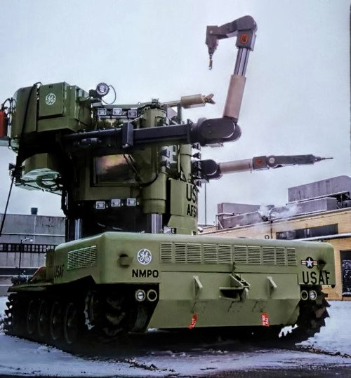

While the walking truck was attempting its own legwork, General Electric had other experiments intersecting with the mecha concept — these ones focusing on making the arms. This machine, the GE Beetle, was honed in on an ambitious task. With the rise of nuclear power in the 1960s, there was a demand for a craft which could maintain and repair nuclear reactors while shielding the human pilot from radiation. The Beetle would be the tool made for this job.
Plans were being drafted for a new “nuclear bomber”, one whose reactor would need a special repairman. Mounted on a modified tank chassis and referred to as a “mobile manipulator”, the behemoth could crane high off the ground on hydraulic pistons to fix engines bathed in radiation. The Beetle's cockpit was shielded by seven panes of leaded glass, keeping its pilot out of danger. Its clawed arms, the inspiration behind its name, could even pick up an egg without breaking the shell.
But before it would serve any of these hypothetical aircraft, the Beetle would run into maintenance problems of its own. Unreliability plagued it, with internal testing revealing a litany of mechanical errors and limiting it to painfully slow speeds. And to put a nail in its coffin, the same safety concerns that doomed many other proposals of the atomic age would shutter plans for the nuclear planes it was built for.
While GE's Beetle never served its original purpose, it serves as an almost prescient image of what artists and authors would dream up later in mecha series. Many grounded mecha series like Battletech and Steel Battalion would style their machines as walking tanks, a spitting image of the Beetle's top half. While futurism is all about speculation to what's next, this time real life was faster to the punch than fiction.